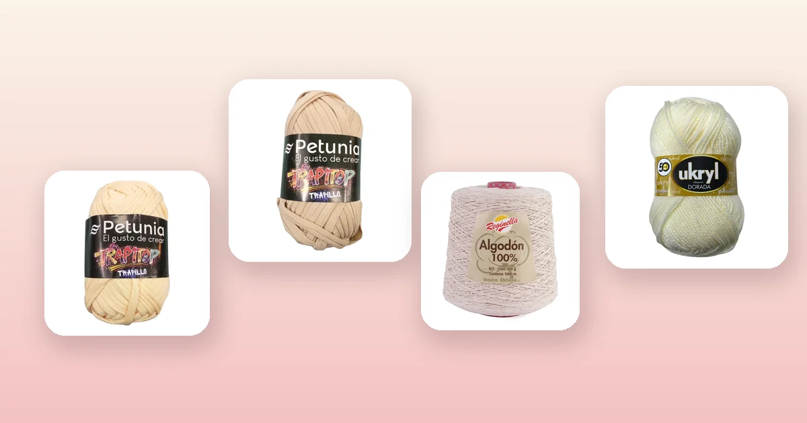

Proyectos de crochet
Cómo tejer una canasta a crochet paso a paso
Las canastas tejidas a crochet son el proyecto perfecto para organizar tu hogar con estilo: quedan firmes, se tejen rápido con trapillo y puedes hacerlas del tamaño exacto que necesitas. En esta guía tienes la tabla de tamaños, el paso a paso con base circular y paredes rectas, cómo agregar asas y qué hilo o trapillo elegir.

Materiales para tejer tu canasta
Una canasta a crochet es uno de los proyectos más gratificantes para principiantes y tejedoras avanzadas: se teje en pocas horas, decora cualquier rincón y resuelve el orden de la casa. Necesitas:
- Entre 1 y 5 ovillos de trapillo o hilo grueso, según el tamaño de la canasta. Más abajo tienes la tabla exacta.
- Un ganchillo acorde al hilo: 8 a 10 mm para trapillo, 5 a 7 mm para hilo de algodón grueso. Si tienes dudas, revisa nuestra guía de qué aguja o ganchillo usar para tejer.
- Marcador de puntos para no perder el inicio de la vuelta.
- Aguja lanera y tijeras.
Para canastas que mantengan su forma sin almidonar, el trapillo es imbatible. Estas son las mejores opciones del catálogo:
- Trapillo grueso para canastas con cuerpo: Trapillo Petunia Crema o Trapillo Petunia Arena, de 80% algodón y 20% poliéster, con 30 m por ovillo. Ideal para canastas medianas y grandes que necesitan estructura. Toda la línea está en lana Petunia.
- Algodón en cono para canastas grandes: Cono de Algodón Crudo o Cono de Algodón Mantequilla, de 100% algodón con 200 m por cono de 200 g. Rinde mucho para canastas tipo macetero o para ropa.
- Hilo de algodón para canastas decorativas: Hilo de Algodón Arena o Hilo de Algodón Blanco, con 200 m por ovillo. Para cestas pequeñas de escritorio o baño.
- Lana con textura para canastas decorativas: Lana Ukryl Etiqueta Dorada Crudo o Lana Ukryl Etiqueta Dorada Camel, con 150 m por ovillo. Queda suave al tacto para canastas de dormitorio o living.
Cómo se construye una canasta a crochet
El principio es sencillo: una base circular plana más paredes rectas sin aumentos. La base se teje como cualquier círculo a crochet (anillo mágico con aumentos regulares), y las paredes se levantan dejando de aumentar. Al pasar de la base a las paredes, el tejido sube formando el contenedor.
Si ya has tejido un granny square o un gorro a crochet, la base de la canasta te resultará familiar: es exactamente el mismo inicio circular. La diferencia es que en el gorro sigues aumentando para cubrir la cabeza, y en la canasta dejas de aumentar para que el tejido suba recto.
Todo el proyecto se teje en punto bajo, porque da un tejido compacto y firme, justo lo que una canasta necesita. El punto alto queda demasiado suelto y la canasta se desploma.
Tabla de tamaños para canastas
La medida clave es el diámetro de la base: determina cuánto cabe dentro de la canasta. La altura la decides según lo que quieras guardar.
| Tamaño | Diámetro base | Altura | Uso típico |
|---|---|---|---|
| Mini | 10 cm | 8 cm | Escritorio, llaves, monedas |
| Pequeña | 15 cm | 12 cm | Baño, maquillaje, ovillos |
| Mediana | 20 – 25 cm | 15 – 18 cm | Revistas, pañales, juguetes |
| Grande | 30 – 35 cm | 20 – 25 cm | Ropa, mantas, almacenamiento |
Una canasta mediana en trapillo es el proyecto más popular: se teje en una tarde y resuelve el orden del baño, el living o la pieza de los niños.
Paso 1: teje la base circular
La base circular es la fundación de tu canasta. Si queda dispareja, toda la canasta se tuerce. Sigue estos pasos con atención:
- Anillo mágico: haz un anillo mágico y teje 6 puntos bajos dentro. Tira del hilo para cerrar el centro.
- Vuelta 2: teje 2 puntos bajos en cada punto de la vuelta anterior. Tendrás 12 puntos.
- Vuelta 3: alterna 1 punto bajo + 1 aumento (2 puntos en el mismo). Tendrás 18 puntos.
- Vuelta 4: alterna 2 puntos bajos + 1 aumento. Tendrás 24 puntos.
- Sigue el patrón: cada vuelta agrega un punto bajo más entre aumentos. Vuelta 5: 3 pb + 1 aum (30 puntos). Vuelta 6: 4 pb + 1 aum (36 puntos). Y así sucesivamente.
Continúa hasta que la base alcance el diámetro que necesitas. Coloca un marcador de puntos al inicio de cada vuelta para no perder la cuenta. Si no sabes hacer el anillo mágico, aprende la técnica en nuestra guía de puntos básicos de crochet.
| Diámetro deseado | Vueltas de aumentos | Puntos en la última vuelta |
|---|---|---|
| 10 cm | 4 | 24 |
| 15 cm | 5 – 6 | 30 – 36 |
| 20 cm | 7 – 8 | 42 – 48 |
| 25 cm | 9 – 10 | 54 – 60 |
| 30 cm | 11 – 12 | 66 – 72 |
Paso 2: levanta las paredes
Aquí ocurre la «magia» que convierte un círculo plano en un contenedor:
- La vuelta de quiebre: al terminar la base, teje una vuelta completa tomando solo la hebra trasera de cada punto bajo. No hagas aumentos. Esta vuelta crea un pliegue visible que marca el borde entre la base y las paredes.
- Paredes rectas: desde la siguiente vuelta, teje en punto bajo tomando ambas hebras como siempre, sin aumentos ni disminuciones. Cada vuelta tendrá el mismo número de puntos que la última vuelta de la base.
- Sigue hasta la altura deseada. Cuenta las vueltas para asegurarte de que las paredes queden parejas.
La tensión es fundamental en este paso: si tejes muy suelto, las paredes se abren hacia afuera y la canasta parece un bowl. Si tejes demasiado apretado, se va a cerrar hacia adentro. Mantén una tensión firme y constante. Si tienes problemas de tensión, baja un número de ganchillo (por ejemplo, de 10 mm a 9 mm o de 8 mm a 7 mm).
Paso 3: teje las asas
Las asas son opcionales, pero hacen la canasta mucho más práctica para moverla de lugar:
- Marca los puntos: en la penúltima vuelta, coloca dos marcadores en puntos opuestos de la canasta (a la mitad de cada lado).
- Teje hasta el primer marcador en punto bajo normal.
- Cadenas al aire: salta 3 a 5 puntos (según el tamaño del asa que quieras) y haz el mismo número de cadenas al aire.
- Continúa en punto bajo hasta el segundo marcador y repite las cadenas al aire.
- Última vuelta: teje en punto bajo, y al llegar a cada cadena al aire, teje puntos bajos sobre ella para que quede firme.
Para canastas grandes, refuerza las asas tejiendo 2 vueltas más de punto bajo sobre ellas. Un asa de trapillo con solo una vuelta puede estirarse con el peso.
Paso 4: bordes y terminación
El borde define si tu canasta se ve casera o profesional:
- Punto raso: cierra la última vuelta con un punto raso en el primer punto.
- Esconde las hebras: con la aguja lanera, pasa la hebra por dentro de los puntos de la pared (al menos 5 cm) y corta el sobrante.
- Borde decorativo opcional: teje una vuelta adicional de punto cangrejo (punto bajo hacia la izquierda) por el borde superior. Da un acabado grueso y decorativo.
Al terminar, bloquea la canasta: humedécela, coloca un recipiente rígido adentro (un bowl o un tarro) y déjala secar en esa posición. Al secarse, el tejido memorizará la forma. Para el cuidado posterior, sigue nuestra guía de cómo lavar y cuidar la lana.
Almidonado para canastas rígidas
Si quieres que la canasta quede dura como madera (para maceteros, canastas de fruta o decoración pura), el almidonado es la solución:
- Método 1 – Almidón de cocina: mezcla 2 cucharadas de almidón de maíz (maicena) en 1 litro de agua tibia. Sumerge la canasta, escúrrela sin retorcer y dale forma sobre un molde. Déjala secar 24 horas.
- Método 2 – Cola fría diluida: mezcla 1 parte de cola fría con 2 partes de agua. Pasa la mezcla con un pincel por el exterior de la canasta. Seca sobre un molde. Queda más rígida que con almidón.
- Método 3 – Laca para tela: rocía la canasta terminada con spray endurecedor para telas, disponible en mercerías. Es el método más rápido, pero menos duradero.
Las canastas de trapillo grueso como Trapillo Petunia Café raramente necesitan almidonar, porque el propio grosor del hilo les da estructura. El almidonado se recomienda especialmente para canastas tejidas con hilos finos.
Cuántos ovillos necesitas según el hilo
Las cantidades son para canastas de tamaño mediano (20 cm de diámetro × 15 cm de alto) en punto bajo, con un margen del 15% incluido:
| Hilo | Metros por ovillo | Mini | Pequeña | Mediana | Grande |
|---|---|---|---|---|---|
| Trapillo Petunia | 30 m | 1 | 2 | 3 | 5 |
| Cono de Algodón | 200 m | ½ | ½ | 1 | 1 – 2 |
| Hilo de Algodón | 200 m | 1 | 1 | 2 | 3 |
| Ukryl Etiqueta Dorada | 150 m | 1 | 1 | 2 | 3 |
Con Cono de Algodón Crudo puedes tejer varias canastas pequeñas de un solo cono, lo que lo hace muy económico si quieres un set completo para el baño o la cocina. Si quieres calcular con precisión, usa la fórmula de la guía de cuánta lana necesito para tejer.
Variaciones de canastas a crochet
- Canasta con tapa: teje un círculo del mismo diámetro que la boca de la canasta y agrégale 2 o 3 vueltas de paredes para que encaje como tapa. Ideal para guardar ovillos de lana.
- Canasta colgante (para plantas): teje 3 cordones de cadenas de 40 cm cada uno, únelos al borde superior de la canasta separados por tercios y átalos arriba. Revisa nuestra guía de flores a crochet para decorarla.
- Canasta cuadrada: empieza con una base rectangular en vez de circular. Teje un rectángulo plano y levanta las paredes haciendo disminuciones en las 4 esquinas.
- Set de canastas apilables: teje 3 canastas de distinto tamaño con el mismo hilo y color. Se ven espectaculares en una repisa.
- Canasta con bolsillos exteriores: teje pequeños rectángulos y cóselos por fuera para guardar tijeras, marcadores o agujas.
Errores comunes al tejer una canasta
- Base que no queda plana. Pasa cuando hay más o menos aumentos de los necesarios. Si la base se ondula, tienes demasiados aumentos. Si se curva como un bowl antes de tiempo, te faltan aumentos. Desteje y sigue la tabla de aumentos.
- Paredes que se abren. Tensión demasiado suelta. Baja un número de ganchillo o aprieta más. La vuelta de quiebre (solo hebra trasera) también ayuda a que las paredes suban rectas.
- Perder puntos en las paredes. Sin marcador de puntos es muy fácil confundir el inicio de la vuelta. Marca siempre el primer punto.
- Usar punto alto para las paredes. El punto alto deja agujeros y la canasta no tiene estructura. Usa siempre punto bajo para las paredes.
- No bloquear. El bloqueo en húmedo con un molde adentro es lo que le da la forma definitiva a la canasta.